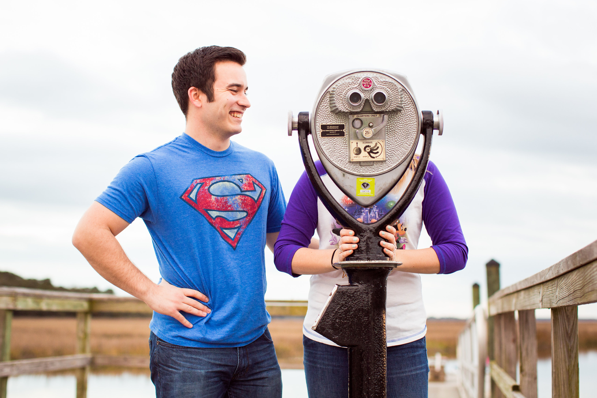

- 
-

-

-

As told by Matt...
The first thing I think about when I think of Tracy is her incredible warmth. Anyone lucky enough to spend time around her can attest to how infectious her personality is and how deeply empathetic Tracy is towards everyone she meets. My favorite thing about Tracy is her smile! Even after the toughest day, just seeing her smile lights up the room and turns my day around.
I’ll never forget our first date. I got to Loggerhead’s early and waited anxiously for her to arrive. When Tracy came up the stairs, I was struck by how stunningly gorgeous she was. As we sat and talked for hours that felt like minutes, I realized that as gorgeous as Tracy is on the outside, she’s a thousand times more beautiful on the inside. Everyday since, the love that started that night has grown deeper than I knew was possible. I always hoped to find the kind of indescribable love that lasts a lifetime, but it wasn’t until I met Tracy that I knew what I was hoping for. While we can’t know what adventures life will bring us, I’m so excited to take that journey with my best friend and in a few short months, to call her my wife!
Photos by TTT